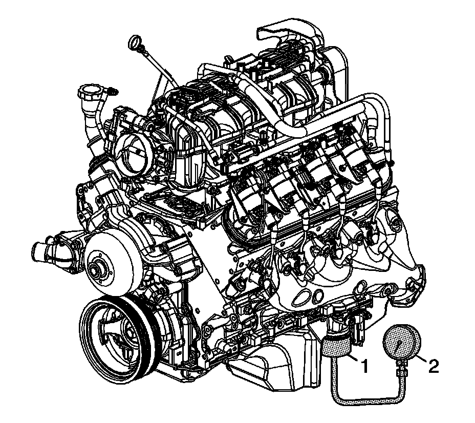

Engine Oil Pressure: Testing and Inspection
Oil Pressure Diagnosis and Testing
Tools Required
^ EN-47971 Oil Pressure Gage Adapter
^ J 21867 Pressure Gage

1. With the vehicle on a level surface, run the vehicle for a few minutes. Allow adequate drain down time, 2-3 minutes, and measure the oil level.
2. If required, add the recommended grade engine oil and fill the crankcase until the oil level measures full on the oil level indicator.
3. Run the engine briefly, 10-15 seconds, and verify low or no oil pressure on the vehicle gage or light.
4. Listen for a noisy valve train or a knocking noise.
5. Inspect for the following conditions:
^ Oil diluted by water or glycol antifreeze
Refer to Coolant in Engine Oil. Coolant In Engine Oil
^ Foamy oil, which may be caused by a cut or damaged oil pump screen O-ring seal
6. Remove the oil filter and install the EN-47971 (1).
7. Install the J 21867 (2), or equivalent to the EN-47971 (1).
8. Run the engine and measure the engine oil pressure.
9. Compare the readings to Engine Mechanical Specifications (RPO LY2 VIN C) Engine Mechanical Specifications (RPO LMG VIN 0) Engine Mechanical Specifications (RPO LY5 VIN J) Engine Mechanical Specifications (RPO LC9 VIN 3) Engine Mechanical Specifications (RPO L76 VIN Y) Engine Mechanical Specifications (RPO LY6 VIN K) Engine Mechanical Specifications (RPO L92 VIN 8).
10. If the engine oil pressure is below specifications, inspect the engine for 1 or more of the following conditions:
^ Oil pump worn or dirty
Refer to Oil Pump Cleaning and Inspection.
^ Oil pump-to-engine block bolts loose
Refer to Oil Pump, Screen and Crankshaft Oil Deflector Installation (RPO LY2/LC9/LY5/LMG) Oil Pump, Screen and Crankshaft Oil Deflector Installation (RPO LY6/L76/L92).
^ Oil pump screen loose, plugged, or damaged
^ Oil pump screen O-ring seal missing or damaged
^ Malfunctioning oil pump pressure relief valve
^ Excessive bearing clearance
^ Cracked, porous, or restricted oil galleries
^ Oil gallery plugs missing or incorrectly installed
Refer to Engine Block Plug Installation.
^ Improper operation of the active fuel management oil pressure relief valve
Refer to Cylinder Deactivation (Active Fuel Management) Oil Pressure Relief Valve Diagnosis and Testing. Component Tests and General Diagnostics